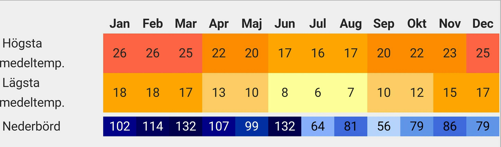

daigram visas Sydney klimat
Sedney Geografi
Sydney ligger i en kustsänka som gränsar till Stilla Havet i öster, Greater Blue Mountains i väster, Hawkesbury River i norr och Woronoraplatån i söder.
Sydney ligger på en nedsjunken kustlinje, där havsnivån har stigit till floddalgångar utskurna i sandsten.
En av dessa översvämmade dalgångar, Port Jackson, mer känd som Sydney Harbour, är den största naturliga hamnen i världen. Det finns mer än 70 naturliga hamnar och havsstränder, inkluderat den kända Bondi Beach.
Sydneys stadsdel täckte 1687 km² år 2001.
Sydneys statistiska del, som används för befolkningmätningar, är det inofficiella stadsområdet och täcker 12,145 km².
Detta område inkluderar Central Coast och Greater Blue Mountains.
Geografiskt sträcker sig Sydney över två större regioner: Cumberlandslätten, en relativt platt region söder och väster om hamnen, och Hornsbyplatån, en sandstensplatå belägen norr om hamnen, genomskuren av branta dalgångar.
De äldsta delarna av staden ligger i de flacka områdena söder om hamnen; North Shore i norr utvecklades långsammare på grund av den kuperade topografin.
Klimat
Klimatet i staden är fuktigt och subtropiskt.